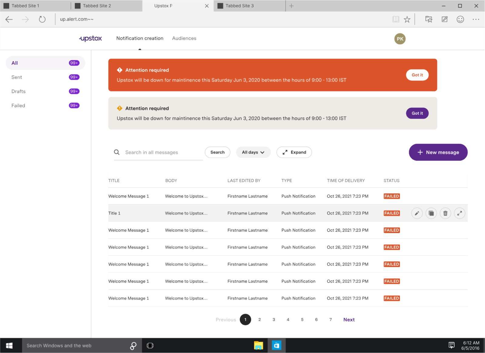
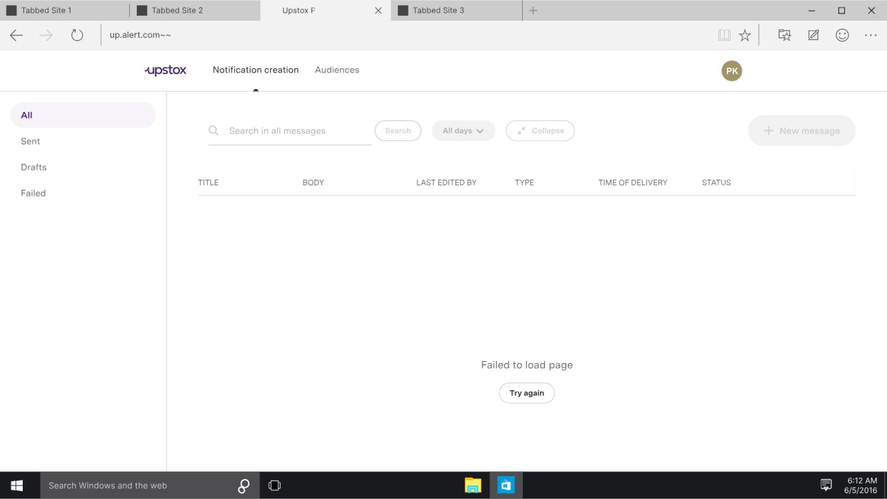
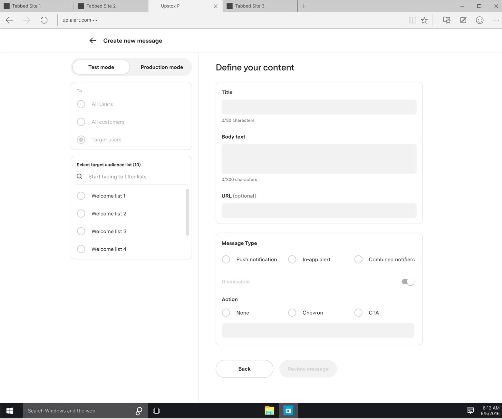
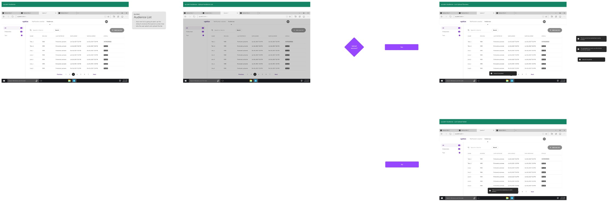
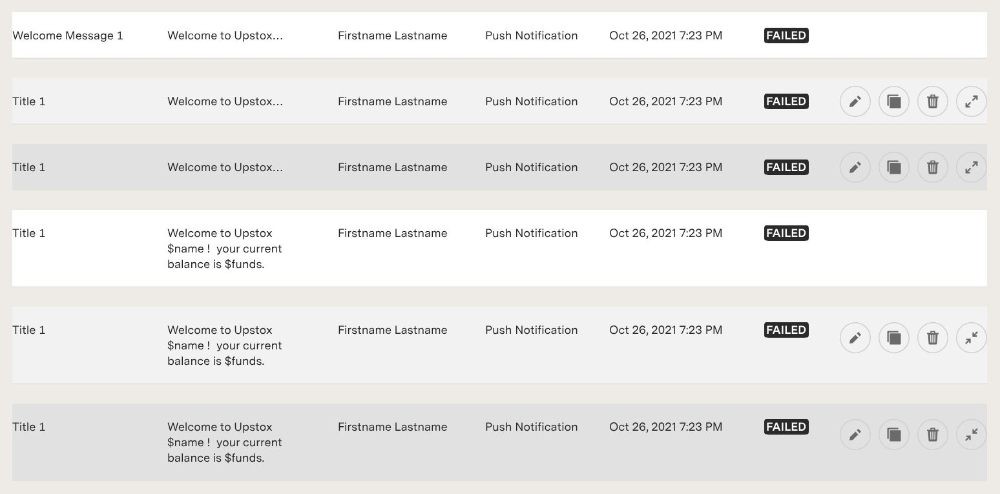
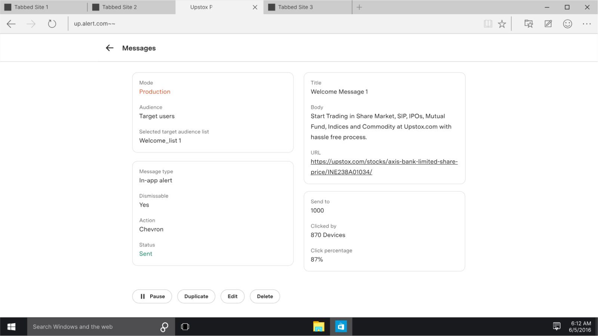
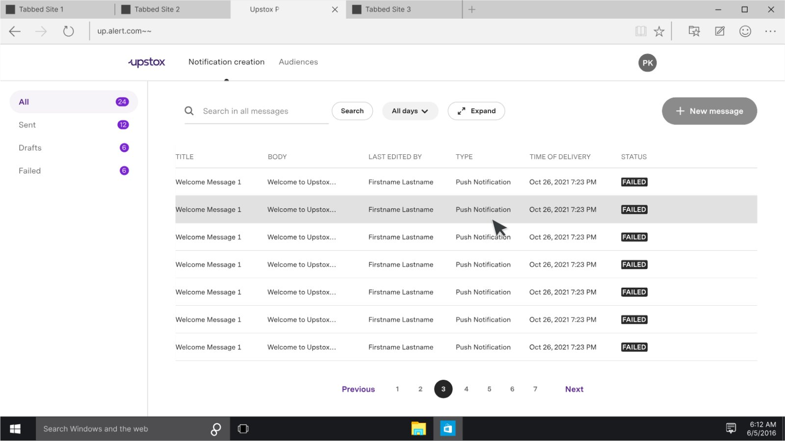
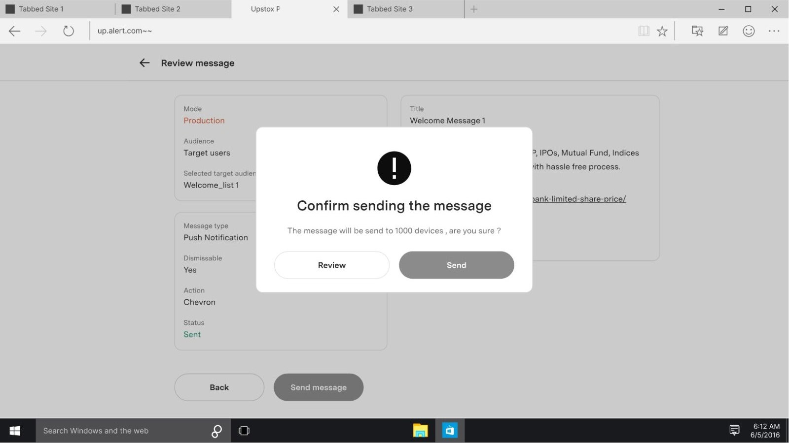
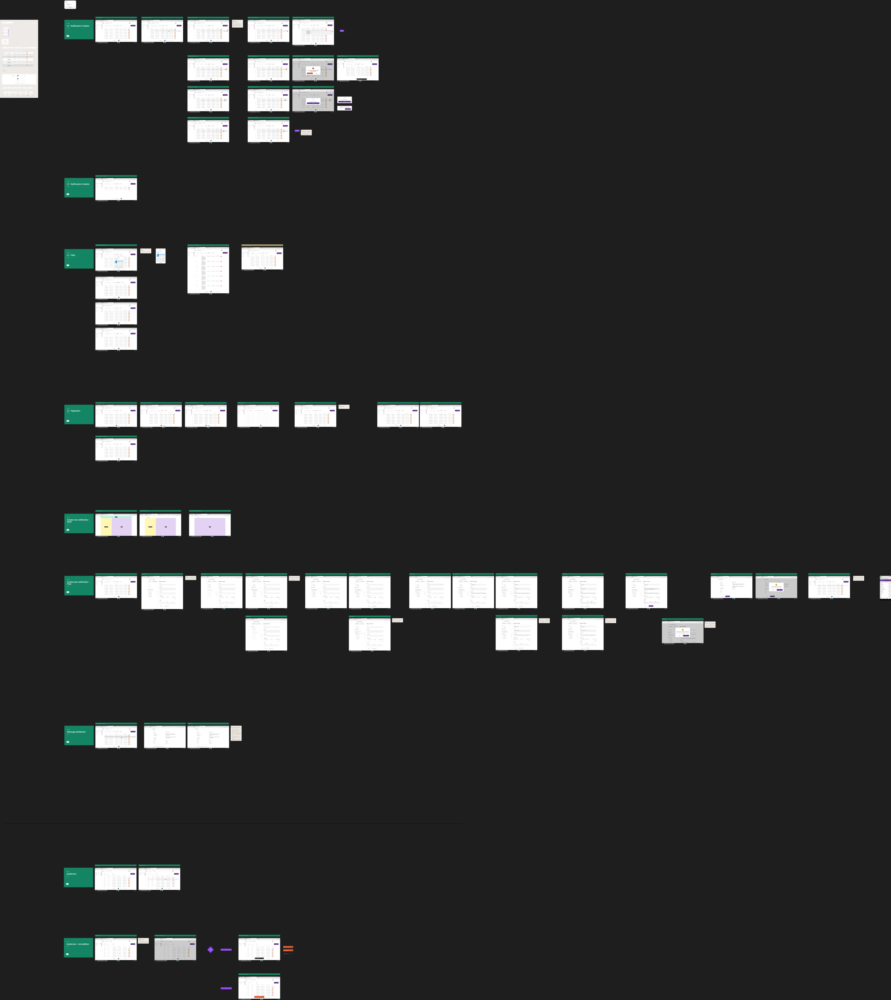
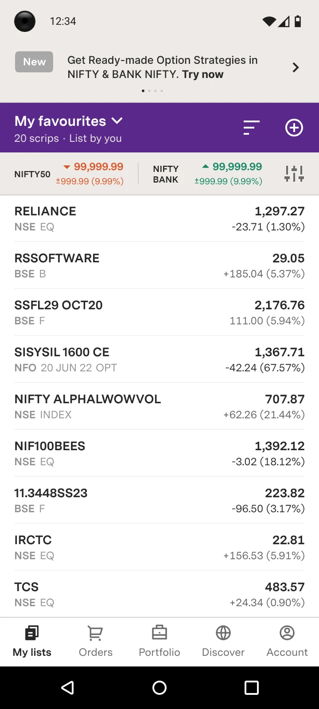

Overview
Upstox is one of India’s largest retail stock broking platforms, with 10M+ registered users and ~3M active traders at the time of this project. Up.alert was an internal web tool built for Upstox’s marketing, content, and communications teams — giving them the ability to send push notifications and in-app alert banners to users directly, without any engineering involvement. I was the sole designer on this project, working end-to-end from requirements to production-ready screens.

My role
The PM provided written requirements, and I translated them into a working, production-ready interface — from UX through final UI — with no prior version to iterate on and no existing internal-tool design language to reference. The work was reviewed by my manager and the Head of the department, and greenlit for production, all within a month.
The problem
Up.alert had been scoped, planned, and then shelved for close to a year before I was handed it. When it was picked back up in November 2022, the urgency was real — the team had been living without it the entire time, dependent on engineering for every user-facing communication. Every push notification, every urgent in-app warning during a market event or technical outage, required a code deployment.
Beyond the dependency problem, Upstox had no way to deliver persistent in-app messages — content that stayed in a user’s inbox and could be revisited. The solution needed to serve two distinct use cases from one interface: proactive marketing communications (campaigns, announcements) and reactive crisis communications (system warnings, fund-related alerts) — with safeguards robust enough that the wrong message could never reach the wrong audience.
Design approach
The tool had three core surfaces: a login gate (via Okta SSO), an Audiences management tab, and a Notification creation page. Given the timeline, the real design complexity lived in the logic and edge cases that had to be surfaced clearly for a non-technical team operating a tool with real, immediate user-facing consequences.

Test vs. Production mode
Test vs. Production mode was the first design problem. The same tool served internal QA testing and live production sends. I designed a persistent, unambiguous environment indicator — always visible in the interface, impossible to miss. Test mode audiences were restricted to groups prefixed with “Test_” to add a data-level guard alongside the visual one.

Audience management
Audience management involved CSV upload and reuse. Operators upload lists of UCCs (user codes), which persist for 30 days before archiving. I designed the upload flow with immediate feedback — successful uploads surfaced UCC count confirmation, failures gave specific retry prompts. When selecting a pre-uploaded audience for a new notification, the selected group’s UCC count was surfaced again at the point of selection — a deliberate confirmation moment to prevent the wrong list being used at send time.

Personalisation
Personalisation was technically interesting — the CSV format supported variables (name, balance, etc.) that could be injected as placeholders in notification body copy. I had to make this legible to content writers who had never written template syntax. The interface made the variable format explicit and visible, with the notification creation fields laid out so the relationship between CSV columns and message variables was obvious without documentation.

In-app warning banners
In-app warning banners persist on screen until the user dismisses them or acts on the CTA. They needed to be killable after publish — a warning about a funds issue should disappear the moment it’s resolved, not continue surfacing a stale alert. I designed a pause/resume control into the dashboard for active in-app messages, keeping the communications team in control post-send.

Tracking
Tracking was built in from the start. The notification history view surfaced send status, timestamp, and editor. A dedicated performance view per notification showed sends, deliveries, and click-through — a feedback loop on communication effectiveness, and an audit trail for CS escalations.

What I paid attention to
The users of this tool were marketing managers and content writers making time-sensitive decisions, sometimes during active incidents. Every high-consequence action — sending to all users, publishing a live in-app banner — had enough friction to be intentional, calibrated so it created pause without creating delay during a crisis.
The audit trail requirement also informed how I thought about the history view. It was a compliance and accountability surface as much as a convenience feature.

Outcome
Up.alert shipped end-to-end in under a month — a project that had sat untouched for close to a year, designed, reviewed, and greenlit for production within a single sprint cycle. It gave Upstox’s marketing and communications teams their first fully self-serve channel to reach users without engineering dependency, handling both scheduled campaign communications and real-time crisis messaging from a single interface.
Status
By December 2022, all design work was completed and delivered to the engineering team in production-ready format, with pixel-perfect specifications for iOS, Android and web, and documentation for both the user-facing notification centre and the internal admin panel.
The product was not shipped during my tenure at Upstox — I departed in February 2023. The complete design system was ready for implementation.

The wider system
The design covered two integrated components, built to Upstox’s existing design language and experience standards.
Component 1: User-facing notification centre
A dedicated inbox accessible from the navigation drawer that served as a central hub for all user communications:
- Announcement Cards: Horizontally scrollable cards highlighting new products, features, and promotions with rich media support (images, GIFs, videos).
- Categorized Notifications: System-generated notifications organized by priority (Critical, Warning, Normal) and category (Funds, Orders, Rewards, Price Alerts).
- Critical Alert Bar: Persistent top-of-screen alerts for urgent matters (MTM warnings, system outages) that remain visible until user action is taken.
- Notification Settings: Granular control allowing users to manage notification preferences by category and manage price alerts.

Component 2: Marketing admin panel
An internal dashboard enabling marketing teams to create and manage communications independently:
- Message Creation Interface: Intuitive form for composing notifications with title, body, URL, CTA, and rich media options.
- Audience Targeting: CSV upload system for targeting specific user segments with support for personalized content via variables.
- Test/Production Modes: Safe testing environment before broadcasting to production users.
- Campaign History: Complete audit trail of sent messages with metadata and search functionality.
- Performance Analytics: Real-time metrics showing notifications sent, delivered, and clicked with conversion tracking.
Technical considerations
Working closely with engineering teams, I designed solutions that balanced user experience with technical feasibility:
- Socket-based delivery: Designed real-time notification appearance without requiring app refresh
- WebView integration: In-app browser for external URLs, maintaining user context within the app
- Personalization system: Variable placeholder design (e.g. $name, $funds) allowing dynamic content without UI changes
- Performance optimization: Lazy loading, image optimization, and pagination ensuring smooth performance across devices
Challenges and how they were solved
Balancing urgency with UX
I designed a graduated alerting system. Critical alerts appear as persistent bars at screen-top with clear dismiss/action options. Warnings appear prominently in the inbox but don’t block primary workflows. Normal notifications remain non-intrusive. This hierarchy ensures genuinely critical information stands out.
Designing for non-technical users
I created an interface that abstracts technical complexity. The CSV format follows familiar spreadsheet patterns. Variable syntax ($name) mirrors common templating. Test mode provides a safe sandbox. Real-time previews show exactly how messages will appear. Success/error messages guide users through each step.
Managing information density
Two-section layout separates curated Announcements (carousel) from system Notifications (list). Auto-archiving after 2 days keeps the list manageable. Category filters and clear visual hierarchy enable quick scanning. Pagination ensures performance even with high notification volumes.
Appendix: notification categories & types
| Category | Priority | Variant | Trigger |
|---|---|---|---|
| Orders | Normal | Traded | Order fully executed |
| Funds | Normal | Deposit | Payment successful |
| Margin | Critical | MTM Alert | 100% fund consumption |
| Rewards | Normal | Invitation | Referral sent |
| Price Alert | Normal | Upward | Price above threshold |